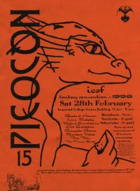

Picocon 15
|  |
|
Dear Picoconer,
Hello and welcome to Picocon 15
If this is your first ever Picocon, perhaps I should explain a bit about it. Picocon is the annual one-day convention run by Imperial College Union Science Fiction, Fantasy and Gothic Horror Society (known as ICSF). We take over the Union building for a day and fill it with discussions, games, films, video's stalls, and other stuff appealing to our peculiarly warped audience. It is, basically, a scaled-down version of the cons that happen all over fandom - hence the "pico", because it's very small.
If you're a regular at Picocon, I'm sure you'll know what to expect. Unfortunately this year round things haven't gone quite as we'd have liked. This is the first year in recent history for the con to have been organised from within the society, and we had a lot of difficulty in making contact with authors - hence there are no guests of honour this year. However, we have slashed the price, run round in small circles, and planned a program absolutely packed with items you should enjoy. Let us know what you think.
Bearing in mind the size of the con, we've decided that a single, well organised program is better than trying to run multiple tracks. Please come along to the events. If you really don't like something, there will be videos showing all day, computer games, and art exhibition and stalls, all in the UDH.
If you have any problems or questions, please come to the front desk in the Union Foyer which will be manned continuously. And don't forget to obtain your copy of the fanzine 'Paradigm' which is on sale for just 50p.
Enjoy the day
helen-louise Windsor, Picocon Organiser
| Previous page | Contents | Next Page |